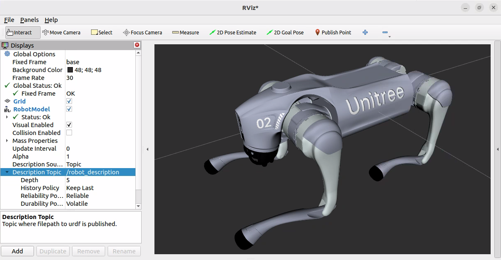

3.3.2 可视化功能实现
1.素材下载
访问宇树官网文档中心：https://support.unitree.com/home/zh/developer/Obtain SDK 下载 go2 urdf 。
解压缩后会获取一个 GO2_URDF 文件夹。然后将 GO2_URDF 下的 dae、meshes、urdf 三个文件夹复制到当前功能包下。
2.laucnh文件
在功能包下新建launch目录，在目录下新建名为display.launch.py的文件，并输入如下内容：
from launch import LaunchDescription
from launch_ros.actions import Node
import os
from ament_index_python.packages import get_package_share_directory
from launch_ros.parameter_descriptions import ParameterValue
from launch.substitutions import Command, LaunchConfiguration
from launch.actions import DeclareLaunchArgument
from launch.conditions import IfCondition
# 默认情况下，joint_state_publisher 节点会启动：
# ros2 launch go2_description display.launch.py
# 如果你想禁用 joint_state_publisher 节点，可以在启动时传入 use_joint_state_publisher 参数：
# ros2 launch go2_description display.launch.py use_joint_state_publisher:=false
def generate_launch_description():
go2_description_dir = get_package_share_directory("go2_description")
default_model_path = os.path.join(go2_description_dir, "urdf", "go2_description.urdf")
# 声明一个布尔参数，用于控制是否启动 joint_state_publisher
use_joint_state_publisher = DeclareLaunchArgument(
name="use_joint_state_publisher",
default_value="true", # 默认值为 true，表示默认启动 joint_state_publisher
description="Whether to launch the joint_state_publisher node"
)
model = DeclareLaunchArgument(name="model", default_value=default_model_path)
# 加载机器人模型
robot_description = ParameterValue(Command(["xacro ", LaunchConfiguration("model")]))
robot_state_publisher = Node(
package="robot_state_publisher",
executable="robot_state_publisher",
parameters=[{"robot_description": robot_description}]
)
# 根据传入的布尔参数决定是否启动 joint_state_publisher
joint_state_publisher = Node(
package="joint_state_publisher",
executable="joint_state_publisher",
condition=IfCondition(LaunchConfiguration("use_joint_state_publisher"))
)
return LaunchDescription([
model,
use_joint_state_publisher,
robot_state_publisher,
joint_state_publisher,
])
3.编辑配置文件
1.package.xml
package.xml中添加如下配置：
<exec_depend>rviz2</exec_depend>
<exec_depend>xacro</exec_depend>
<exec_depend>robot_state_publisher</exec_depend>
<exec_depend>joint_state_publisher</exec_depend>
<exec_depend>ros2launch</exec_depend>
2.CMakeLists.txt
CMakeLists.txt 中添加如下配置：
install(
DIRECTORY launch urdf meshes dae
DESTINATION share/${PROJECT_NAME}
)
4.编译
终端中进入当前工作空间，编译功能包：
colcon build --packages-select go2_description
5.执行
当前工作空间下，启动终端，并输入如下指令：
. install/setup.bash
ros2 launch go2_description display.launch.py
仍然是在当前工作空间下，再新建终端，并输入如下指令：
. install/setup.bash
rviz2
rviz2启动后，将参考坐标系设置为base，添加RobotModel插件并将 description topic 设置为/robot_description。即可显示 go2 模型。
